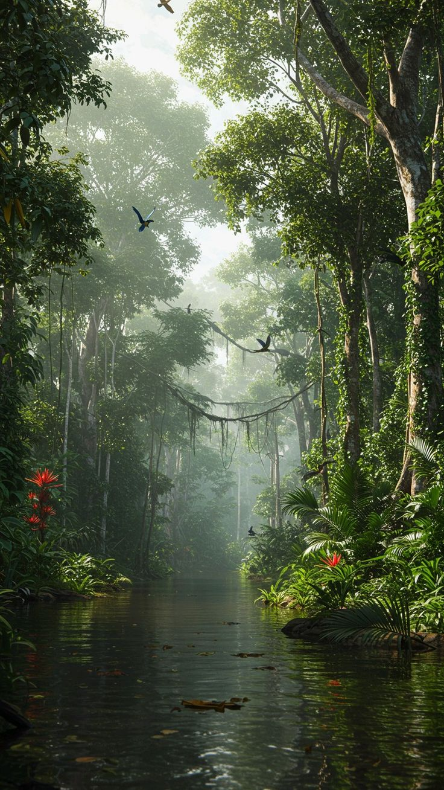

La Selva Amazónica
La selva amazónica es el ecosistema con mayor biodiversidad del planeta. Alberga miles de especies de animales, plantas y microorganismos que conviven en un delicado equilibrio natural.
Explorar la flora y fauna amazónica es adentrarse en un mundo misterioso, vibrante y vital para el equilibrio ecológico del planeta.

Fauna de la Selva
Entre su fauna destacan felinos como el jaguar, aves exóticas como el guacamayo azul, y cientos de especies aún no descubiertas.


Flora de la Selva
La flora no se queda atrás: árboles gigantes, plantas medicinales, orquídeas y lianas forman un entramado verde que lo cubre todo.
